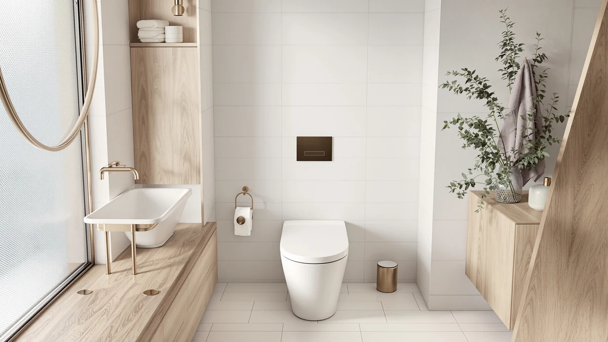

How to Open Ido Toilet: Complete Guide (2026)
Prices and picks verified as of October 2026. Independent, reader-supported reviews.


Things to Know Before You Buy
- IDO one-piece toilets secure the tank lid with two spring-loaded side tabs instead of a simple twist-off button, so a flathead screwdriver does most of the work.
- Shutting off the water supply and draining the tank fully before you start is the single step that prevents a flooded bathroom floor.
- A flush rod connects the lid's button housing to the valve stack underneath, and it has to come loose before the lid lifts free.
- Mineral scale from hard water is the most common reason an IDO flush button feels stiff or won't trigger at all.
- Replacement seals and fill valve kits for one-piece toilets run about $10 to $20 and fit most dual-flush tank assemblies, IDO included.
Knowing how to open ido toilet tank lids matters the moment the flush button sticks, water keeps trickling into the bowl, or you simply need to see what's going on inside before you call a plumber. IDO builds its one-piece models with a sealed dual-flush button plate on top of the tank rather than a lift-off lid, which throws off anyone used to older two-piece toilets where the lid lifts away by hand with no tabs to release.
We researched IDO's service documentation and compared it against verified owner reviews of similar dual-flush tank assemblies to put together the walkthrough below. Owners report that the lid itself is straightforward once you know the side tabs release it, and that most of what looks like a broken flush mechanism turns out to be scale buildup around the button collar. Work through the five steps in order, keep the tank drained before you touch any hardware, and you'll have the lid open, the mechanism inspected, and everything back together inside about half an hour.
What You'll Need
- Supplies: a replacement fill valve seal or washer, white vinegar for descaling mineral buildup, and clean rags or paper towels
- Tools: an adjustable wrench and a flathead screwdriver
Step 1: Shut off the water supply and drain the tank
Find the shutoff valve on the wall or floor behind the toilet, usually a small oval handle on the supply line, and turn it clockwise until it stops. Press and hold the flush button until the tank runs dry, then press it again a second time to clear any water still sitting in the line between the valve and the bowl.
This is the step that decides whether the rest of the job goes smoothly or ends with water across your bathroom floor. If the fill valve keeps hissing after you shut the supply, the valve is probably only half closed rather than fully off, so go back and turn it again until it stops dead.
Step 2: Release the side tabs and lift the lid away
IDO's tank lids sit on two spring-loaded tabs rather than a twist-off collar, one on each long side of the lid near the back. Press both tabs in at the same time with your fingers or the tip of a flathead screwdriver, and the lid releases with a soft click.
Lift the lid straight up rather than tilting it forward, since the button assembly on the underside is still connected to the flush valve by a short plastic rod. Set the lid on a folded towel nearby so the rod and button housing stay clean and you don't chip the ceramic edge of the tank.
Step 3: Disconnect the flush rod from the valve stack
Look underneath the lid and you'll see a short plastic rod running from the button housing down to the flush valve stack inside the tank. Squeeze the small retaining clip at the top of the rod and pull it free from the button mechanism. Take a photo with your phone first, because the clip's orientation matters when you put everything back together.
Once the rod is disconnected, the lid comes away completely and you can set it aside with the button housing intact. You're now looking straight down at the flush valve, the fill valve, and the overflow tube, which is the point of opening an IDO toilet in the first place if you're chasing a weak flush or a running tank.
Step 4: Inspect and clean the fill valve and flush valve
Run your fingers around the flush valve seat and the seal that sits inside it, feeling for grit, white scale, or a surface that's gone stiff and brittle. Wipe both with a rag soaked in white vinegar to dissolve mineral deposits, letting stubborn buildup sit for a few minutes before you scrub it loose. If the seal is cracked or won't come clean, swap it for a new one rather than fighting it. A worn seal is the most common reason a flush trickles or won't shut off.
Check the fill valve float and the tube feeding the overflow pipe at the same time, because both tend to collect the same scale that jams the button above them. A fill valve that sticks partway open wastes water quietly for months before anyone notices the bill, so this is worth the extra two minutes while the tank is already open.
Step 5: Reconnect the rod and reseat the lid
Clip the plastic rod back onto the flush valve using the orientation from your photo, then lower the lid onto the tank and press down near the back until both side tabs click into place. Give the lid a gentle tug to confirm it's seated and won't shift when the button is pressed.
Turn the water supply valve back on slowly and let the tank fill completely. Press the flush button three or four times in a row to confirm it engages smoothly, the tank refills to the marked line each time, and no water seeps around the base of the button housing. An IDO toilet that opens and closes cleanly on the first few tries means the job is finished.
Common Mistakes to Avoid
The most common mistake when you learn how to open ido toilet tank lids is forcing the lid up by the front edge instead of pressing both side tabs first, which cracks the plastic tab housing and turns a thirty-minute job into a replacement-parts search. Skipping the water shutoff is a close second. A tank that isn't fully drained spills across the floor the moment the lid comes free, and the cleanup takes longer than the repair itself.
Disconnecting the flush rod without a reference photo causes problems on reassembly almost as often. The clip has a specific orientation, and reconnecting it backward leaves you with a button that won't trigger a flush or won't shut one off. Reviewers who rush this step frequently end up opening the lid a second time to fix what they got wrong the first.
Replacing a worn seal with a generic universal part instead of one sized for IDO's valve body is another frequent error. A seal that doesn't seat evenly starts leaking within a few months, which means redoing the whole job. Finally, don't stop after one test flush. Press the button three or four times in a row, since a mechanism that works once but hesitates on the second press usually has a linkage that's slightly out of alignment, and catching that now saves you from opening the tank again next week.
Our Top Picks
If opening the tank revealed a flush valve or fill mechanism too worn to save, these one-piece toilets replace the whole unit with hardware that stays easier to service down the line.

Editor's Pick
Vomlor 19" ADA Height Elongated
The dual-flush button sits on a simple lift-off lid with no hidden side tabs, so checking or replacing the fill valve later takes a few minutes instead of a half-hour project.
$339.99
Check Price on Amazon
Best Value
TOTO Legato WASHLET+ One-Piece Elongated
TOTO's SanaGloss glaze resists the mineral buildup that jams most flush buttons, and the WASHLET+ seat pairs with a flush valve built to stay accessible for years of service.
$1,330.00
Check Price on Amazon
Premium Choice
HOROW T38 Smart Toilet with
The remote-controlled flush skips the manual button mechanism entirely, trading the usual stuck-tab problem for an electronic trigger with fewer moving parts to open and inspect.
$999.00
Check Price on AmazonFrequently Asked Questions
How do I know if my toilet has side tabs instead of a twist-off lid?
Run your fingers along both long edges of the tank lid near the back. Two raised, spring-loaded tabs mean you press them in to release the lid, while a smooth collar around a center button usually means it twists off instead.
What if the side tabs will not budge when I press them?
Mineral scale around the tab housing is the usual cause. Soak the area with white vinegar for ten minutes and try again with steady pressure rather than force. The plastic tabs crack under too much pressure.
Do I need to shut off the water before I open the tank lid?
Yes. Shutting off the supply valve and draining the tank first keeps water from spilling onto the floor the moment the lid comes free and the flush rod disconnects.
Can I open the lid without disconnecting the flush rod first?
No. The rod links the button housing on the lid to the flush valve inside the tank, so you have to unclip it before the lid comes away fully, or you risk snapping the rod.
How often should I open and inspect the mechanism?
Once a year is enough for most households, or sooner if the flush feels weak, the button sticks, or water keeps trickling into the bowl between flushes. Hard water areas benefit from checking every six months.
Verdict
Learning how to open ido toilet tank lids comes down to five steps done in order: shut off the water and drain the tank, press both side tabs to release the lid, disconnect the flush rod from the valve stack, clean or replace the worn fill valve and flush valve seal, then reconnect everything and test the flush several times. Most stuck buttons and weak flushes trace back to mineral scale or a tired seal, both of which cost under $20 to fix once the lid is open in front of you. Photograph the rod's clip orientation before you disconnect it, and press both tabs evenly rather than forcing the front edge, and you'll avoid the two mistakes that turn this into a repeat job. If the valve body underneath turns out to be cracked or corroded past saving, a toilet like the Vomlor ADA-height elongated model swaps in a lift-off lid design that stays simple to open the next time something needs a look.